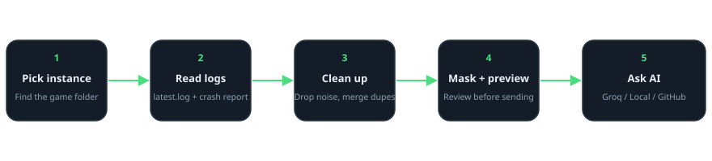

3AI providers
14,000Default character cap
3vanilla / Forge / Fabric headers
0Extra libraries (Qt Widgets + Network only)
How it works

Why use it
🧹
Clean first, then send
Drops DEBUG and known noise, merges repeats into (×N) and folds long stacks — saving tokens and keeping the signal.
🔒
Privacy by default
User directories, accessToken, player name, UUIDs and IP:Port are masked, and you can preview everything before sending.
🧠
Three AI routes
Cloud Groq, fully offline llama.cpp, or GitHub Copilot through the official Copilot CLI.
📄
More than latest.log
Also extracts the newest crash report and hs_err_pid native crash logs, including the main stack and suspected mods.